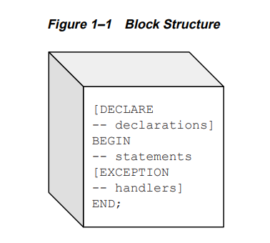
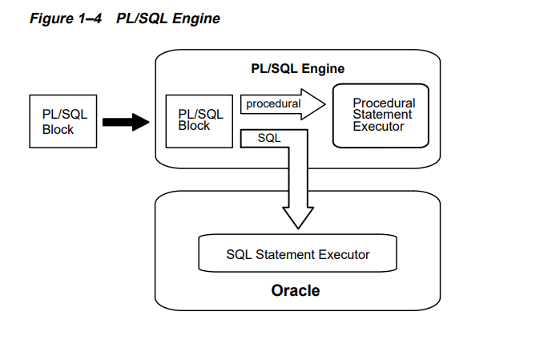
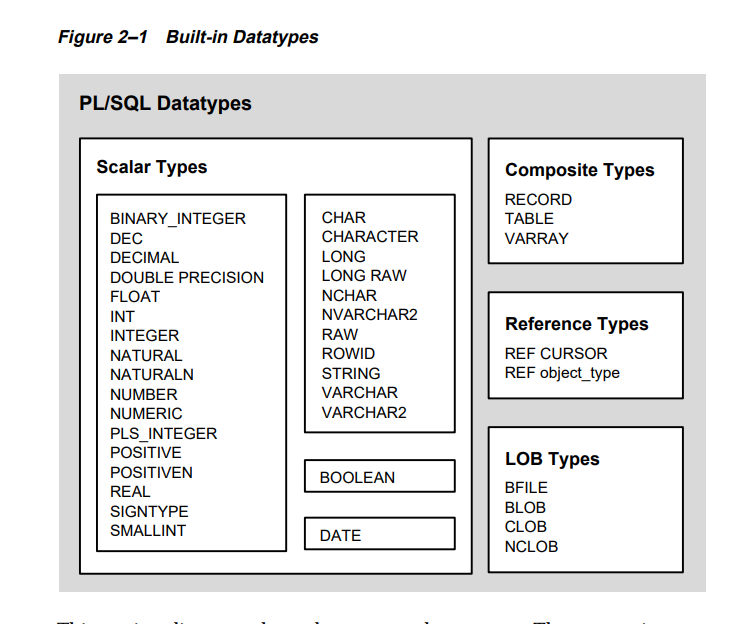
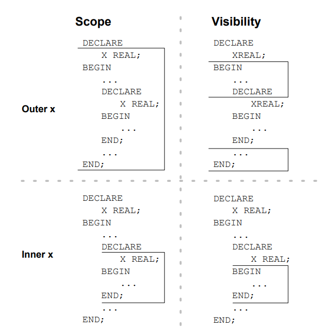
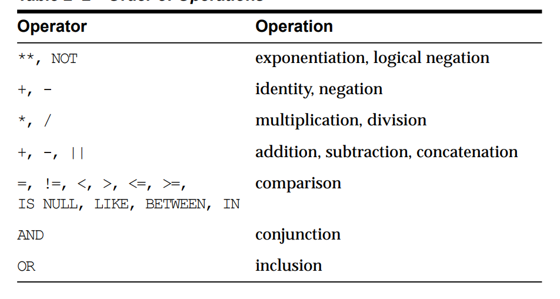
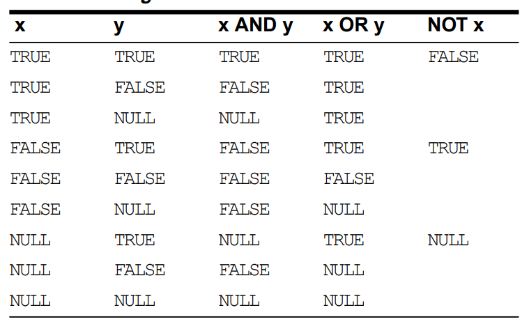
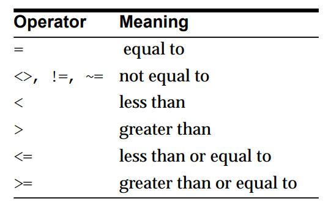
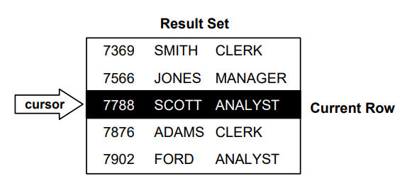

Overview
With PL/SQL, you can use SQL statements to manipulate Oracle data and flow-of control statements to process the data. Moreover, you can declare constants and
variables, define procedures and functions, and trap runtime errors. Thus, PL/SQL
combines the data manipulating power of SQL with the data processing power of
procedural languages.
A good way to get acquainted with PL/SQL is to look at a sample program. The
program below processes an order for tennis rackets. First, it declares a variable of
type NUMBER to store the quantity of tennis rackets on hand. Then, it retrieves the
quantity on hand from a database table named inventory. If the quantity is
greater than zero, the program updates the table and inserts a purchase record into
another table named purchase_record. Otherwise, the program inserts an out of-stock record into the purchase_record table.
-- available online in file ’examp1’
DECLARE
qty_on_hand NUMBER(5);
BEGIN
SELECT quantity INTO qty_on_hand FROM inventory
WHERE product = ’TENNIS RACKET’
FOR UPDATE OF quantity;
IF qty_on_hand > 0 THEN -- check quantity
UPDATE inventory SET quantity = quantity - 1
WHERE product = ’TENNIS RACKET’;
INSERT INTO purchase_record
VALUES (’Tennis racket purchased’, SYSDATE);
ELSE
INSERT INTO purchase_record
VALUES (’Out of tennis rackets’, SYSDATE);
END IF;
COMMIT;
END;
Block Structure
PL/SQL is a block-structured language. That is, the basic units (procedures,
functions, and anonymous blocks) that make up a PL/SQL program are logical
blocks, which can contain any number of nested sub-blocks. Typically, each logical
block corresponds to a problem or subproblem to be solved. Thus, PL/SQL
supports the divide-and- conquer approach to problem solving called stepwise
refinement
A block (or sub-block) lets you group logically related declarations and statements.
That way, you can place declarations close to where they are used. The declarations
are local to the block and cease to exist when the block completes.A PL/SQL block has three parts: a declarative part, an
executable part, and an exception-handling part.
(In PL/SQL, a warning or error
condition is called an exception.) Only the executable part is required.
The order of the parts is logical. First comes the declarative part, in which items can
be declared. Once declared, items can be manipulated in the executable part.
Exceptions raised during execution can be dealt with in the exception-handling
part.

You can nest sub-blocks in the executable and exception-handling parts of a
PL/SQL block or subprogram but not in the declarative part. Also, you can define
local subprograms in the declarative part of any block. However, you can call local
subprograms only from the block in which they are defined
Architechture
The PL/SQL runtime system is a technology, not an independent product. Think of
this technology as an engine that executes PL/SQL blocks and subprograms. The
engine can be installed in an Oracle server or in an application development tool
such as Oracle Forms or Oracle Reports. So, PL/SQL can reside in two
environments:
-> The Oracle server
-> Oracle tools
These two environments are independent. PL/SQL might be available in the Oracle
server but unavailable in tools, or the other way around. In either environment, the
PL/SQL engine accepts as input any valid PL/SQL block or subprogram.
The PL/SQL engine processing an anonymous block. The engine
executes procedural statements but sends SQL statements to the SQL Statement
Executor in the Oracle server.

In the Oracle Server
Application development tools that lack a local PL/SQL engine must rely on
Oracle to process PL/SQL blocks and subprograms. When it contains the PL/SQL
engine, an Oracle server can process PL/SQL blocks and subprograms as well as
single SQL statements. The Oracle server passes the blocks and subprograms to its
local PL/SQL engine.
Anonymous Blocks
Anonymous PL/SQL blocks can be embedded in an Oracle Precompiler or OCI
program. At run time, the program, lacking a local PL/SQL engine, sends these
blocks to the Oracle server, where they are compiled and executed. Likewise,
interactive tools such as SQL*Plus and Enterprise Manager, lacking a local PL/SQL
engine, must send anonymous blocks to Oracle.
Stored Subprograms
Subprograms can be compiled separately and stored permanently in an Oracle
database, ready to be executed. A subprogram explicitly CREATEd using an Oracle
tool is called a stored subprogram. Once compiled and stored in the data dictionary,
it is a schema object, which can be referenced by any number of applications
connected to that database.
Stored subprograms defined within a package are called packaged subprograms;
those defined independently are called stand-alone subprograms. (Subprograms
defined within another subprogram or within a PL/SQL block are called local
subprograms. They cannot be referenced by other applications and exist only for
the convenience of the enclosing block.)
Variable & Constants
PL/SQL allows you to declare constants and variables, then use them in SQL and
procedural statements anywhere an expression can be used. However, forward
references are not allowed. So, you must declare a constant or variable before
referencing it in other statements, including other declarative statements.
Declaring Variables
Variables can have any SQL datatype, such as CHAR, DATE, and NUMBER, or any
PL/SQL datatype, such as BOOLEAN and BINARY_INTEGER. For example, assume
that you want to declare a variable named part_no to hold 4-digit numbers and a
variable named in_stock to hold the Boolean value TRUE or FALSE. You declare
these variables as follows:
part_no NUMBER(4);
in_stock BOOLEAN;
Assigning Values to a Variable
You can assign values to a variable in two ways. The first way uses the assignment
operator (:=), a colon followed by an equal sign. You place the variable to the left
of the operator and an expression to the right. Some examples follow:
tax := price * tax_rate;
bonus := current_salary * 0.10;
amount := TO_NUMBER(SUBSTR(’750 dollars’, 1, 3));
valid := FALSE;
Declaring Constants
Declaring a constant is like declaring a variable except that you must add the
keyword CONSTANT and immediately assign a value to the constant. Thereafter, no
more assignments to the constant are allowed. In the following example, you
declare a constant named credit_limit:
credit_limit CONSTANT REAL := 5000.00;
Data Types
Every constant and variable has a datatype, which specifies a storage format,
constraints, and valid range of values. PL/SQL provides a variety of predefined
datatypes. A scalar type has no internal components. A composite type has internal
components that can be manipulated individually. A reference type holds values,
called pointers, that designate other program items. A LOB type holds values, called
locators, that specify the location of large objects (graphic images for example)
stored out-of-line.

Scope and Visibility
References to an identifier are resolved according to its scope and visibility. The
scope of an identifier is that region of a program unit (block, subprogram, or
package) from which you can reference the identifier. An identifier is visible only in
the regions from which you can reference the identifier using an unqualified name.
The scope and visibility of a variable named x, which is declared in an enclosing block, then redeclared in a sub-block.

Identifiers declared in a PL/SQL block are considered local to that block and global
to all its sub-blocks. If a global identifier is redeclared in a sub-block, both
identifiers remain in scope. Within the sub-block, however, only the local identifier
is visible because you must use a qualified name to reference the global identifier.
Although you cannot declare an identifier twice in the same block, you can declare
the same identifier in two different blocks. The two items represented by the
identifier are distinct, and any change in one does not affect the other. However, a
block cannot reference identifiers declared in other blocks at the same level because
those identifiers are neither local nor global to the block.
Operators
Expressions are constructed using operands and operators. An operand is a variable,
constant, literal, or function call that contributes a value to an expression. An
example of a simple arithmetic expression follows:
-X / 2 + 3
Unary operators such as the negation operator (-)
operate on one operand; binary
operators such as the division operator (/)
operate on two operands. PL/SQL has
no ternary operators.
The simplest expressions consist of a single variable, which yields a value directly.
PL/SQL evaluates (finds the current value of) an expression by combining the
values of the operands in ways specified by the operators. This always yields a
single value and datatype. PL/SQL determines the datatype by examining the
expression and the context in which it appears.
Operator Precedence
The operations within an expression are done in a particular order depending on
their precedence (priority).

Logical Operators
The logical operators AND, OR, and NOT follow the tri-state logic

As the truth table shows, AND returns TRUE only if both its operands are true. On
the other hand, OR returns TRUE if either of its operands is true. NOT returns the
opposite value (logical negation) of its operand.
-> Short-Circuit Evaluation
When evaluating a logical expression, PL/SQL uses shortcircuit evaluation. That is, PL/SQL stops evaluating the expression as soon as the result can be determined. This allows you to write expressions that might
otherwise cause an error. Consider the following OR expression:
DECLARE
...
on_hand INTEGER;
on_order INTEGER;
BEGIN
..
IF (on_hand = 0) OR (on_order / on_hand < 5) THEN
...
END IF;
END;
When the value of on_hand is zero, the left operand yields TRUE, so PL/SQL need
not evaluate the right operand. If PL/SQL were to evaluate both operands before
applying the OR operator, the right operand would cause a division by zero error. In
any case, it is a poor programming practice to rely on short-circuit evaluation.
Comparison Operators
Comparison operators compare one expression to another. The result is always
TRUE, FALSE, or NULL. Typically, you use comparison operators in the WHERE
clause of SQL data manipulation statements and in conditional control statements.
1) Relational Operators
The relational operators allow you to compare arbitrarily complex expressions. The
following list gives the meaning of each operator:

2) IS NULL Operator
The IS NULL operator returns the Boolean value TRUE if its operand is null or
FALSE if it is not null. Comparisons involving nulls always yield NULL. Therefore,
to test for nullity (the state of being null), do not use the statement
IF variable = NULL THEN ...
Instead, use the following statement:
IF variable IS NULL THEN ...
3) LIKE Operator
You use the LIKE operator to compare a character value to a pattern. Case is
significant. LIKE returns the Boolean value TRUE if the character patterns match or
FALSE if they do not match.
The patterns matched by LIKE can include two special-purpose characters called
wildcards. An underscore (_) matches exactly one character; a percent sign (%)
matches zero or more characters. For example, if the value of ename is ’JOHNSON’,
the following expression yields TRUE:
ename LIKE ’J%SON’
4) BETWEEN Operator
The BETWEEN operator tests whether a value lies in a specified range. It means
“greater than or equal to low value and less than or equal to high value.” For
example, the following expression yields FALSE:
45 BETWEEN 38 AND 44
IN Operator
The IN operator tests set membership. It means “equal to any member of.
The set can contain nulls, but they are ignored. For example, the following
statement does not delete rows in which the ename column is null:
DELETE FROM emp WHERE ename IN (NULL, ’KING’, ’FORD’);
Furthermore, expressions of the form
value NOT IN set
yield FALSE if the set contains a null. For example, instead of deleting rows in
which the ename column is not null and not ’KING’, the following statement
deletes no rows:
DELETE FROM emp WHERE ename NOT IN (NULL, ’KING’);
Concatenation Operator
Double vertical bars (||) serve as the concatenation operator, which appends one
string to another, as the following example shows:
’suit’ || ’case’ = ’suitcase’
If both operands have datatype CHAR, the concatenation operator returns a CHAR
value. Otherwise, it returns a VARCHAR2 value
Control Structures
Control structures are the most important PL/SQL extension to SQL. Not only does
PL/SQL let you manipulate Oracle data, it lets you process the data using
conditional, iterative, and sequential flow-of-control statements such as IF-THEN ELSE, FOR-LOOP, WHILE-LOOP, EXIT-WHEN, and GOTO. Collectively, these
statements can handle any situation.
Conditional Control
Often, it is necessary to take alternative actions depending on circumstances. The
IF-THEN-ELSE
statement lets you execute a sequence of statements conditionally.
The IF clause checks a condition; the THEN clause defines what to do if the
condition is true; the ELSE clause defines what to do if the condition is false or null.
Consider the program below, which processes a bank transaction. Before allowing
you to withdraw $500 from account 3, it makes sure the account has sufficient
funds to cover the withdrawal. If the funds are available, the program debits the
account; otherwise, the program inserts a record into an audit table.
DECLARE
acct_balance NUMBER(11,2);
acct CONSTANT NUMBER(4) := 3;
debit_amt CONSTANT NUMBER(5,2) := 500.00;
BEGIN
SELECT bal INTO acct_balance FROM accounts
WHERE account_id = acct
FOR UPDATE OF bal;
IF acct_balance >= debit_amt THEN
UPDATE accounts SET bal = bal - debit_amt
WHERE account_id = acct;
ELSE
INSERT INTO temp VALUES
(acct, acct_balance, ’Insufficient funds’);
-- insert account, current balance, and message
END IF;
COMMIT;
END;
A sequence of statements that uses query results to select alternative actions is
common in database applications. Another common sequence inserts or deletes a
row only if an associated entry is found in another table. You can bundle these
common sequences into a PL/SQL block using conditional logic. This can improve
performance and simplify the integrity checks built into Oracle Forms applications.
Itrative Control
LOOP statements let you execute a sequence of statements multiple times. You place
the keyword LOOP before the first statement in the sequence and the keywords END
LOOP after the last statement in the sequence. The following example shows the
simplest kind of loop, which repeats a sequence of statements continually:
LOOP
-- sequence of statements
END LOOP;
The FOR-LOOP statement lets you specify a range of integers, then execute a
sequence of statements once for each integer in the range. For example, suppose
that you are a manufacturer of custom-made cars and that each car has a serial
number. To keep track of which customer buys each car, you might use the
following FOR loop:
FOR i IN 1..order_qty LOOP
UPDATE sales SET custno = customer_id
WHERE serial_num = serial_num_seq.NEXTVAL;
END LOOP;
The WHILE-LOOP statement associates a condition with a sequence of statements.
Before each iteration of the loop, the condition is evaluated. If the condition yields
TRUE, the sequence of statements is executed, then control resumes at the top of the
loop. If the condition yields FALSE or NULL, the loop is bypassed and control
passes to the next statement.
In the following example, you find the first employee who has a salary over $4000
and is higher in the chain of command than employee 7902:
DECLARE
salary emp.sal%TYPE;
mgr_num emp.mgr%TYPE;
last_name emp.ename%TYPE;
starting_empno CONSTANT NUMBER(4) := 7902;
BEGIN
SELECT sal, mgr INTO salary, mgr_num FROM emp
WHERE empno = starting_empno;
WHILE salary < 4000 LOOP
SELECT sal, mgr, ename INTO salary, mgr_num, last_name
FROM emp WHERE empno = mgr_num;
END LOOP;
INSERT INTO temp VALUES (NULL, salary, last_name);
COMMIT;
END;
The EXIT-WHEN statement lets you complete a loop if further processing is
impossible or undesirable. When the EXIT statement is encountered, the condition
in the WHEN clause is evaluated. If the condition yields TRUE, the loop completes
and control passes to the next statement.
In the following example, the loop
completes when the value of total exceeds 25,000:
LOOP
...
total := total + salary;
EXIT WHEN total > 25000; -- exit loop if condition is true
END LOOP;
-- control resumes here
Sequential Control
The GOTO statement lets you branch to a label unconditionally. The label, an
undeclared identifier enclosed by double angle brackets, must precede an
executable statement or a PL/SQL block. When executed, the GOTO statement
transfers control to the labeled statement or block, as the following example shows:
IF rating > 90 THEN
GOTO calc_raise; -- branch to label
END IF;
...
<< calc_raise>>
IF job_title = ’SALESMAN’ THEN -- control resumes here
amount := commission * 0.25;
ELSE
amount := salary * 0.10;
END IF;
Modularity
Modularity lets you break an application down into manageable, well-defined logic
modules. Through successive refinement, you can reduce a complex problem to a
set of simple problems that have easy-to-implement solutions. PL/SQL meets this
need with program units. Besides blocks and subprograms, PL/SQL provides the
package, which allows you to group related program items into larger units.
Subprograms
PL/SQL has two types of subprograms called procedures and functions, which can
take parameters and be invoked (called). As the following example shows, a
subprogram is like a miniature program, beginning with a header followed by an
optional declarative part, an executable part, and an optional exception-handling
part:
PROCEDURE award_bonus (emp_id NUMBER) IS
bonus REAL;
comm_missing EXCEPTION;
BEGIN
SELECT comm * 0.15 INTO bonus FROM emp WHERE empno = emp_id;
IF bonus IS NULL THEN
RAISE comm_missing;
ELSE
UPDATE payroll SET pay = pay + bonus WHERE empno = emp_id;
END IF;
EXCEPTION
WHEN comm_missing THEN
...
END award_bonus;
When called, this procedure accepts an employee number. It uses the number to
select the employee’s commission from a database table and, at the same time,
compute a 15% bonus. Then, it checks the bonus amount. If the bonus is null, an
exception is raised; otherwise, the employee’s payroll record is updated.
External Procedures
Some programming tasks are more quickly or easily done in a lower-level language
such as C, which is more efficient at machine-precision calculations. For example, a
Fast Fourier Transform (FFT) routine written in C runs faster than one written in
PL/SQL.
To support such special-purpose processing, PL/SQL provides an interface for
calling routines written in other languages. This makes the strengths and
capabilities of those languages available to you.
An external procedure is a third-generation-language routine stored in a dynamic
link library (DLL), registered with PL/SQL, and called by you to do special purpose processing. At run time, PL/SQL loads the library dynamically, then calls
the routine as if it were a PL/SQL subprogram.
Typically, external procedures are used to interface with embedded systems, solve
scientific and engineering problems, analyze data, or control real-time devices and
processes. In the following example, you write a PL/SQL stand-alone function
named interp that registers the C routine c_interp as an external function:
CREATE FUNCTION interp (
-- find the value of y at x degrees using Lagrange interpolation
x FLOAT,
y FLOAT)
RETURN FLOAT AS EXTERNAL
LIBRARY mathlib
NAME "c_interp"
LANGUAGE C;
Packages
PL/SQL lets you bundle logically related types, variables, cursors, and
subprograms into a package. Each package is easy to understand and the interfaces
between packages are simple, clear, and well defined. This aids application
development.
Packages usually have two parts: a specification and a body. The specification is the
interface to your applications; it declares the types, constants, variables, exceptions,
cursors, and subprograms available for use. The body defines cursors and
subprograms and so implements the specification.
In the following example, you package two employment procedures:
CREATE PACKAGE emp_actions AS -- package specification
PROCEDURE hire_employee (empno NUMBER, ename CHAR, ...);
PROCEDURE fire_employee (emp_id NUMBER);
END emp_actions;
CREATE PACKAGE BODY emp_actions AS -- package body
PROCEDURE hire_employee (empno NUMBER, ename CHAR, ...) IS
BEGIN
INSERT INTO emp VALUES (empno, ename, ...);
END hire_employee;
PROCEDURE fire_employee (emp_id NUMBER) IS
BEGIN
DELETE FROM emp WHERE empno = emp_id;
END fire_employee;
END emp_actions;
Cursor Management
Oracle uses work areas to execute SQL statements and store processing
information. A PL/SQL construct called a cursor lets you name a work area and
access its stored information. There are two kinds of cursors: implicit and explicit.
PL/SQL implicitly declares a cursor for all SQL data manipulation statements,
including queries that return only one row. For queries that return more than one
row, you can explicitly declare a cursor to process the rows individually.
An example follows:
DECLARE
CURSOR c1 IS
SELECT empno, ename, job FROM emp WHERE deptno = 20;
The set of rows returned by a multi-row query is called the result set. Its size is the
number of rows that meet your search criteria.
An explicit
cursor “points” to the current row in the result set. This allows your program to
process the rows one at a time.

Multi-row query processing is somewhat like file processing. For example, a
COBOL program opens a file, processes records, then closes the file. Likewise, a
PL/SQL program opens a cursor, processes rows returned by a query, then closes
the cursor. Just as a file pointer marks the current position in an open file, a cursor
marks the current position in a result set.
Cursor Controls
You use the OPEN, FETCH, and CLOSE statements to control a cursor
. The OPEN
statement executes the query associated with the cursor, identifies the result set,
and positions the cursor before the first row. The FETCH statement retrieves the
current row and advances the cursor to the next row. When the last row has been
processed, the CLOSE statement disables the cursor.
Cursor FOR Loops
In most situations that require an explicit cursor, you can simplify coding by using
a cursor FOR loop instead of the OPEN, FETCH, and CLOSE statements. A cursor
FOR loop implicitly declares its loop index as a record that represents a row in a
database table, opens a cursor, repeatedly fetches rows of values from the result set
into fields in the record, then closes the cursor when all rows have been processed.
In the following example, the cursor FOR loop implicitly declares emp_rec as a
record:
DECLARE
CURSOR c1 IS
SELECT ename, sal, hiredate, deptno FROM emp;
...
BEGIN
FOR emp_rec IN c1 LOOP
...
salary_total := salary_total + emp_rec.sal;
END LOOP;
To reference individual fields in the record, you use dot notation, in which a dot (.)
serves as the component (field) selector.
Cursor Variables
Like a cursor, a cursor variable points to the current row in the result set of a multi row query. But, unlike a cursor, a cursor variable can be opened for any type compatible query. It is not tied to a specific query. Cursor variables are true
PL/SQL variables, to which you can assign new values and which you can pass to
subprograms stored in an Oracle database. This gives you more flexibility and a
convenient way to centralize data retrieval.
Typically, you open a cursor variable by passing it to a stored procedure that
declares a cursor variable as one of its formal parameters.
The following procedure opens the cursor variable generic_cv for the chosen query:
PROCEDURE open_cv (generic_cv IN OUT GenericCurTyp, choice IN NUMBER) IS
BEGIN
IF choice = 1 THEN
OPEN generic_cv FOR SELECT * FROM emp;
ELSIF choice = 2 THEN
OPEN generic_cv FOR SELECT * FROM dept;
ELSIF choice = 3 THEN
OPEN generic_cv FOR SELECT * FROM salgrade;
END IF;
END;
Exceptional handling
PL/SQL makes it easy to detect and process predefined and user-defined error
conditions called exceptions. When an error occurs, an exception is raised. That is,
normal execution stops and control transfers to the exception-handling part of your
PL/SQL block or subprogram. To handle raised exceptions, you write separate
routines called exception handlers.
Predefined exceptions are raised implicitly by the runtime system. For example, if
you try to divide a number by zero, PL/SQL raises the predefined exception
ZERO_DIVIDE automatically. You must raise user-defined exceptions explicitly
with the RAISE statement.
You can define exceptions of your own in the declarative part of any PL/SQL block
or subprogram. In the executable part, you check for the condition that needs
special attention. If you find that the condition exists, you execute a RAISE
statement. In the example below, you compute the bonus earned by a salesperson.
The bonus is based on salary and commission. So, if the commission is null, you
raise the exception comm_missing.
DECLARE
...
comm_missing EXCEPTION; -- declare exception
BEGIN
...
IF commission IS NULL THEN
RAISE comm_missing; -- raise exception
ELSE
bonus := (salary * 0.10) + (commission * 0.15);
END IF;
EXCEPTION
WHEN comm_missing THEN
-- process error
Triggers
A database trigger is a stored subprogram associated with a table. You can have
Oracle automatically fire the database trigger before or after an INSERT, UPDATE,
or DELETE statement affects the table. One of the many uses for database triggers is
to audit data modifications.
For example, the following database trigger fires whenever salaries in the emp table are updated:
CREATE TRIGGER audit_sal
AFTER UPDATE OF sal ON emp
FOR EACH ROW
BEGIN
INSERT INTO emp_audit VALUES ...
END;
You can use all the SQL data manipulation statements and any procedural
statement in the executable part of a database trigger.